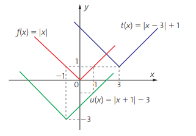

FUNÇÕES MODULARES
O QUE SÃO FUNÇÕES MODULARES?
Funções Modulares são as que possuem domínio e contradomínio no
conjunto dos números reais, ou
seja,
f: R → R
, e que, em sua lei de formação, exista uma variável que esteja dentro do módulo.
f(x) = |x|
g(x) = |x – 8|
h(x) = |-x² – 4x + 5|
Para estudarmos as funções modulares, é importante lembrar a definição de módulo e
suas propriedades.
Representamos o módulo de um número n por |n|, e, por definição, temos que:
O módulo de um número sempre gera resultados positivos, por exemplo:
GRÁFICO
Para construir o gráfico de uma função modular, sempre podemos
construir o gráfico da função que está dentro do módulo primeiro e,
depois, refletir a parte com y negativo para cima.
Como construir o gráfico manualmente:
1º: Fazer o gráfico da função que está dentro do módulo.
2º: Refletir a parte que tem y negativo para y positivo.
3º: Se tiver algum número somando ou subtraindo fora do
módulo, mover o gráfico para cima ou para baixo.
4º: Se a função modular cruzar o eixo x em outros valores, basta
igualar a função a zero e encontrar as novas raízes

CLASSIFICAÇÃO: Médio